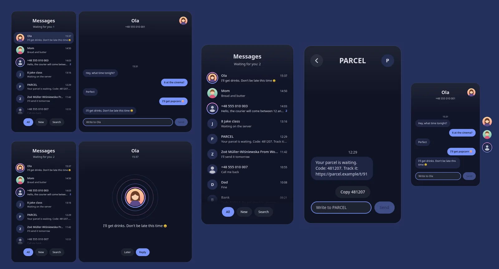
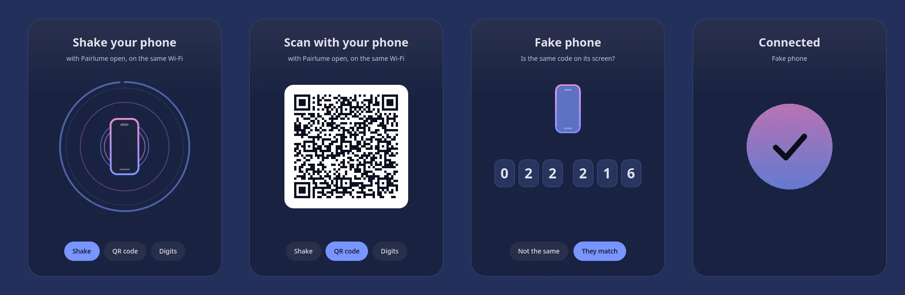

Most of our time goes here
Pairlume
Your Android phone and your Hyprland desktop as one: texts, calls and their voice on the computer, paired by a shake.
- 0Project, protocol, testsdone
- 1Pairing: shake, QR, digitsdone
- 2Texts: window, panel, bubblesdone
- 3Calls, voice over Bluetoothtrying on phones
- 4Notificationsnext
Rust, QML, Kotlin GPL-3.0

